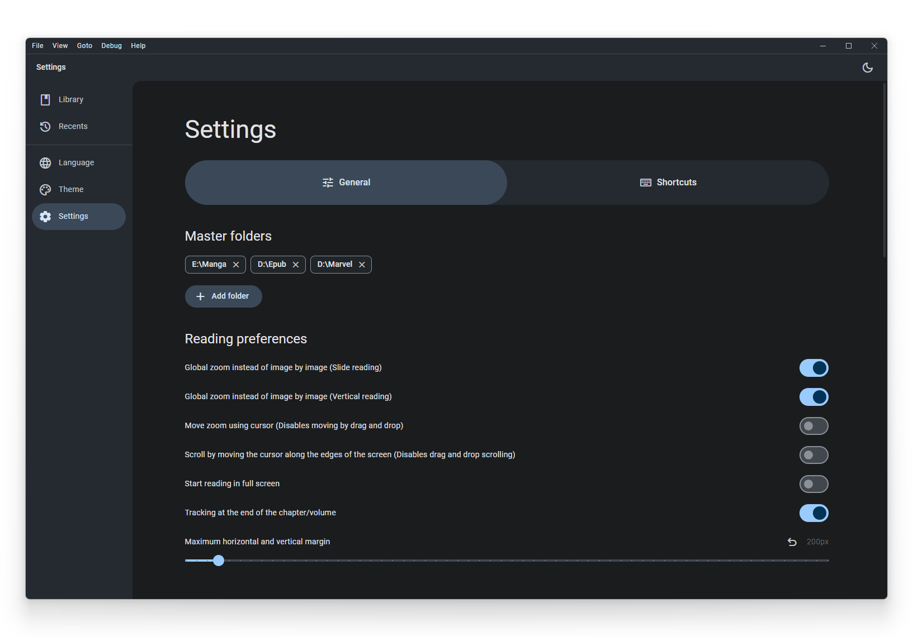
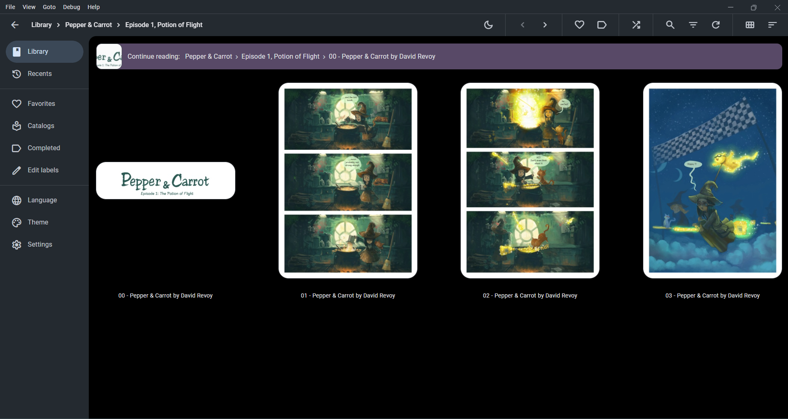
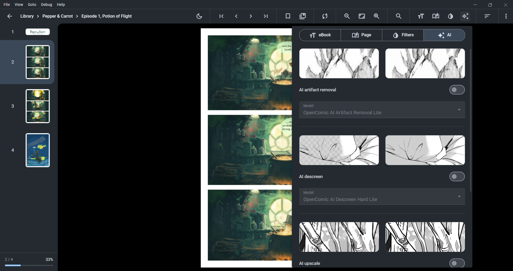
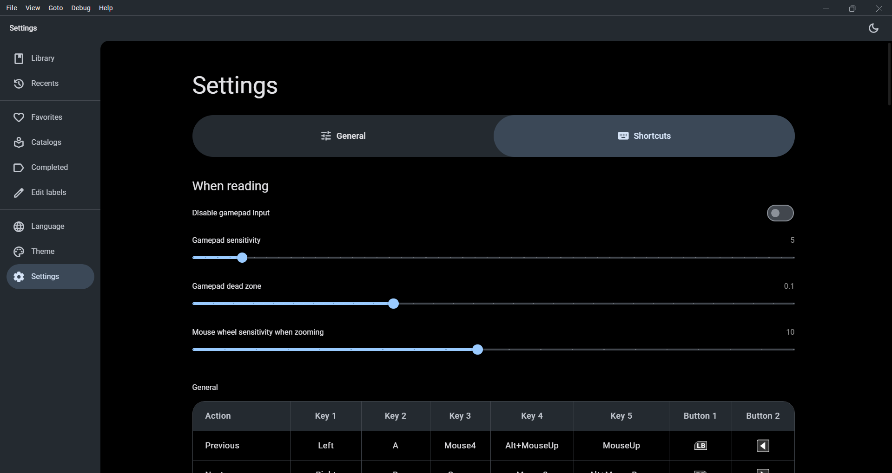

{{language.menu.help.guides}}
GuidesDetailed, easy-to-read guide to every major feature in {{language.appName}}, including changelog additions and README items.
Overview
What OpenComic does and how to use this guide.
Feature index
Every capability grouped by task and toolset.
Navigation
Library, filters, sorting, recents, and metadata.
Reading
Modes, layout, tools, and shortcuts.
Settings
Inputs, storage, performance, and behavior controls.
Version history
Every version feature from the changelog.
Overview
OpenComic is a comic, manga, and ebook reader built for mixed libraries: local folders, compressed archives, PDFs, and EPUB files. This guide explains every feature mentioned in the README, screenshots, and changelog, so you can find and use each option without guesswork.
- Use the left navigation to jump to any topic.
- Each section lists what the feature does and where it lives.
- Version history describes what changed and when it appeared.
Quick start
Start reading in minutes with these steps.
- Add a master folder to index your library.
- Open a folder, archive, PDF, or EPUB file.
- Pick a reading mode: manga, webtoon, single, or double page.
- Use bookmarks and continue reading to resume later.
- Optional: enable tracking and connect AniList or MyAnimeList.
Feature index
All features grouped by what you want to do: read, organize, improve quality, or customize behavior.
Supported formats
- Images: JPG, JP2, JXR, JXL, PNG, APNG, AVIF, HEIC, WEBP, GIF, SVG, BMP, ICO.
- Compressed: RAR, ZIP, 7Z, TAR, LZH, ACE, CBR, CBZ, CBA, CB7, CBT.
- Documents: PDF and EPUB (alpha).
- Background audio: MP3, M4A, MP4, WEBM, WEBA, OGG, OPUS, WAV, FLAC.
Library organization
- Master folders to define your main library roots.
- Favorites and custom labels for grouping by status or genre.
- Multi-layer labeling and folder-based labels in master folders.
- Continue reading, recently added, and recommended sections.
- Genre filtering for library and recents (from tracking metadata).
- Search and quick find within the current page.
Reading modes and layout
- Manga mode, webtoon mode, single page, double page.
- Scroll and slide reading with optional global zoom.
- Page turn transitions, fade, and optional page shadow in double page.
- Rotate horizontal images and PDF pages.
- Option to show page number, progress, and percentage overlays.
Quality and viewing tools
- Color filters: brightness, saturation, contrast, sepia, invert, negative, colorize.
- Image interpolation methods: lanczos3, lanczos2, mitchell, cubic, linear, nearest, and more.
- Magnifier tool with toggleable shortcuts.
- AI image tools: upscaling, descreen, and artifact removal.
Tracking and metadata
- AniList and MyAnimeList tracking with automatic progress updates.
- Auto-prompt to track and inferred chapter/volume from filenames.
- Metadata display for ratings, genres, and search results.
Customization and control
- Custom keyboard, mouse wheel, and gamepad shortcuts.
- Configurable tap zones and optional disablement.
- Multi-window support, tabs, and open-in-new-window options.
- Custom cache and temporary folder location with size limits.
- Settings to control startup, fullscreen, and navigation behavior.



Screenshots
Key visual references for settings, navigation, and reading tools.



Reading
Customize how pages render and how you move through content. Reading controls are designed to work equally well for manga, comics, and long-form webtoons.
Reading modes
Choose between manga, webtoon, single, and double page modes. Each mode can be tuned for alignment, margins, and page turn behavior.
Bookmarks
Save pages and resume where you left off. Bookmarks help you keep track of key moments, not just the last-read page.
Tracking
Track progress and sync with AniList and MyAnimeList. Progress can update automatically as you read.
Presets
Save and reuse reading configurations. Presets make it easy to switch between manga, comics, and webtoon setups.
eBook layout
Adjust layout for PDF and EPUB. Use text-friendly settings for long-form documents and structured chapters.
Page layout
Choose single, double, vertical, or smooth page turn. Layout options control both navigation feel and how wide pages are displayed.
Scroll and slide
Scroll reading supports vertical momentum and mouse wheel paging. Slide reading gives clear page-to-page transitions with optional global zoom.
Tap zones and gestures
Configure tap zones, swipe gestures, and touchscreen zoom. You can invert zones, disable them, and customize how page turns behave.
Color filters
Adjust brightness, contrast, and colorize modes. Use filters for night reading or to enhance scanned pages.
Image interpolation
Set scaling quality for crisp or smooth rendering. Different interpolation methods help balance sharpness and speed.

AI tools
Use AI for image upscaling, descreening, and artifact removal to clean and enhance scanned pages.
Shortcuts and gamepad
Customize keyboard, mouse wheel, and gamepad shortcuts for reading and navigation. Gamepad menus can be disabled or tuned with sensitivity and dead zone settings.
Settings
Control integrations, shortcuts, and storage behavior. These options shape how OpenComic behaves globally across all libraries.
General
- Start in last reading, start in fullscreen, or open in continue reading.
- Use tabs, open multiple windows, or open external files in new windows.
- Discord Rich Presence for showing reading status.
- Show page number, progress, and percentage overlays.
Input
- Custom keyboard, gamepad, and mouse wheel shortcuts.
- Disable gamepad input, tune sensitivity, and set dead zone.
- Tap zones and touch gesture behavior for page turning.
Reading and visuals
- Reading mode defaults, page alignment, and double page shadow.
- Do not enlarge beyond original size, and adjust margins.
- Image interpolation and color filter defaults.
- Force black background and blank white page in night mode.
Tracking and metadata
- Enable AniList and MyAnimeList tracking with auto progress updates.
- Configure when to prompt tracking and when to update progress.
- Metadata display options for ratings and genres.
Storage and performance
- Custom cache and temporary folder location.
- Maximum cache size, cache age, and per-file cache clearing.
- Clear permanent 0/1 page states and wipe stale cache entries.
- Thumbnail and poster handling options for performance.

Version history (features)
Every version from the changelog, with each feature explained in plain language.
v1.7.6
- Added a guided tutorial to explain core features on first use.
- Horizontal scrollbars for Continue Reading, Recommended, Recently Added.
- Increase box section items from 6 to 20 for bigger libraries.
- Replace thumbs feedback buttons with emoji for simpler UI.
- AniList rating display and metadata backfill for older entries.
- EPUB open/read debug instrumentation and more reliable chapter loading.
- Guide updated to include new feature explanations.
v1.7.5
- Dedicated genre filter menu for Library and Recents.
- Recommendations now use full tracking metadata pool.
- Recommendation feedback controls restored and persisted.
- Recommendation cards now show author/subname and thumbnails reliably.
- Genre display now shows all available genres in metadata panels.
v1.7.1
- Rename option in context menu for folders and files.
- Folder rename updates display name without changing system folder name.
- Delete custom catalog tabs with right-click.
- Tracking improvements with better chapter/volume detection and title hints.
- Manual tracking override requires modifier keys to lower progress safely.
- AniList search includes open-on-site icon and refreshes page for new tracking.
v1.7.0
- AI model categories: power efficient, balanced, quality.
- Option to wipe permanent 0/1 page states from the library cache.
- Open multiple OpenComic windows and open files in new windows.
- Custom folder for cache and temporary files.
- AI image tools: upscaling, descreen, artifact removal.
- Cache folder thumbnail lists to reduce disk I/O.
- Hide file extensions by default.
- Play background music on a specific page.
- OPDS auto-download files option.
- Tabs support.
v1.6.5
- Go previous/next chapter with auto-scroll by cursor position.
v1.6.4
- No new features; stability update for Linux release behavior.
v1.6.3
- No new features; stability fixes for reading, cache, and metadata.
v1.6.2
- Change labels from the app bar.
- Continue reading bar context menu.
- Multi-layer folder labeling on servers.
v1.6.1
- Tracking chapter/volume from image names and current page.
- Pick at random button for library discovery.
- Separate browsing and reading order.
- Sort option to list compressed files first.
- Auto-prompt to track on first read.
- Improved relative path support for folder portable mode.
v1.6.0
- Disable "Do not enlarge" in webtoon mode.
- Improved rotation and PDF rotation support.
- PDFs render to blob images for quality and speed.
- Optimized sidebar thumbnails.
- Discord Rich Presence support.
- Calibre series metadata for PDF and EPUB.
- Shortcuts to change horizontal margins.
- Single-thread HDD extractions.
- Auto-hide mouse cursor in fullscreen.
- Progress bar, pages, and percentage in library view.
- Progressive thumbnail generation based on scroll position.
- Mark as read and unread options.
- Option to show page number in top right.
- Support labels in master folders (auto config).
- Shadow effect between pages in double page mode.
v1.5.0
- Improved chapter detection for tracking.
- Image formats: JP2, JXR, JXL, HEIC support.
- Faster thumbnail generation.
- Configuration profiles based on folder/file labels.
- Disable align-with-next-horizontal in double page mode.
- Gamepad sensitivity adjustment option.
- Copy image to clipboard.
- OPDS support and authentication (Basic/Digest).
- Enable/disable fullscreen from more options menu.
- Show package versions in About.
- Custom mouse wheel shortcuts.
- Mouse wheel sensitivity for zooming.
- Ignore files/folders by regex or pattern.
- Secure password/token storage via safeStorage.
- Extraction improvements and expanded archive support (LZH, ACE, TAR.*).
- Support passworded compressed files.
- Release notes in new version dialog.
- Improved extract performance for big files.
- MyAnimeList tracking support.
- Multi-layer folder labeling and header bar filters.
- Disable tap zones option.
- Refactored navigation history (back/forward).
- Count images/pages in file info when metadata missing.
v1.4.1
- No new features; fixes for saving images and drag and drop.
v1.4.0
- Turn pages with mouse wheel.
- Custom image saving names and save bookmarked images.
- Improved file/folder opening behavior options.
- Ignore single folders now works for images.
- Scroll by screen percentage in webtoon mode.
- Shortcuts for saving images.
- Save image template and auto-save to custom folder.
- Multiple poster and folder sizes.
- Header scrolling functionality.
- Clear cache for individual files.
- Server settings to show files in subfolders.
- Show only one page at a time in vertical reader.
- Show files that lost access on macOS (Store).
v1.3.1
- No new features; file type and open location fixes.
v1.3.0
- Next/prev chapter shortcuts.
- Rotate horizontal images option.
- Force black background and white blank page in night mode.
- Disable gamepad input setting.
- Page turn transitions and fade.
- Improved search performance.
- Force app color profile setting.
- WebDAV server support.
- Library navigation using side mouse buttons.
- Move to trash and delete permanently options.
- Improved reading load and memory usage.
- Set an image from folder as poster.
- Multiple configurable tap zones.
- More shortcuts.
- Custom gamepad dead zone.
- Play background music from parent folder.
- Show library and other context in header path.
- Continue reading and recently added sections in library views.
- Sound effect on page turn.
- Set number of items in recents.
- Reading context menu and save images.
v1.2.0
- Error message when continue reading file is missing.
- Background music from folder support (MP3, M4A, WEBM, etc).
- Webtoon mode vertical margin set to 0.
- Show current reading title in app window.
- Open file location of current reading from file menu.
- Enable/disable next/previous chapter via mouse scroll.
- About this file dialog.
- Auto-delete downloaded archives if tmp usage exceeds limit.
- Zip extraction via 7z for performance and partial extraction.
- S3 server support.
v1.1.0
- Maximum temporary file size and preserve temp files on close.
- Label for displaying only one master folder contents.
- Favorite label support.
- Custom labels support.
- Option to not enlarge images beyond original size.
- New image interpolation methods.
- Server connections: smb, ftp, ftps, scp, sftp, ssh.
- Compress cache json files with zstd.
v1.0.0
- Delete bookmarks from bookmark list.
- Save and show current folder progress in addition to main folder.
- Use EPUB/PDF/ComicInfo.xml title instead of filename.
v1.0.0-beta.5
- EPUB format support (alpha).
- Use first image as poster option.
- Open folder/file directly in first image or continue reading.
- Change page using input range slider.
- Go to page by typing the number.
- Global zoom in slide reading.
- Auto switch night/light mode with OS.
v1.0.0-beta.4
- Open directly in continue reading instead of file list.
- Start reading in fullscreen.
- Start OpenComic directly in last reading.
- Recently opened page.
- Move zoom and scroll with mouse.
- Touchscreen navigation improvements (swipe, two-finger zoom, reset).
- Better image edge detection when zoomed.
- Frameless window mode on Windows and macOS.
- Translate page names in PDFs.
v1.0.0-beta.3
- Open file location from context menu.
- Add and remove posters using local artwork assets.
- Show image at original size.
- First/last page buttons and scroll to next/prev comic.
- Better detection for compressed files with wrong extension.
- Start OpenComic at system startup (Windows/macOS).
- Library buttons for next/prev chapter.
- Brightness, saturation, contrast, sepia, and colorize filters.
- Master folder support from settings.
- Ignore single folders in browsing.
- Search and filter in library/browsing.
- Tracking at end of chapter/volume setting.
- View size and clear cache/temp files from settings.
- Max cache size and max cache age settings.
v1.0.0-beta.2
- Reload button in file list.
- Check for new version on startup.
- Custom keyboard and gamepad shortcuts.
- Improved gamepad/keyboard navigation across settings and menus.
v1.0.0-beta.1
- AVIF image support.
- Improved PDF rendering performance and quality.
- Rewrite for compressed file reading and faster thumbnails.
- Global zoom in vertical reader.
- Gamepad support.
- Keyboard navigation in library.
- Clip image option while reading.
- Updated theme to Material 3 and electron upgrade.
- Settings page for default values.
- Drag and drop support.
- Local artwork assets support.
Contributing
Report issues, translate the app, or help improve documentation. Documentation contributions are welcomed in the OpenComic website repository.